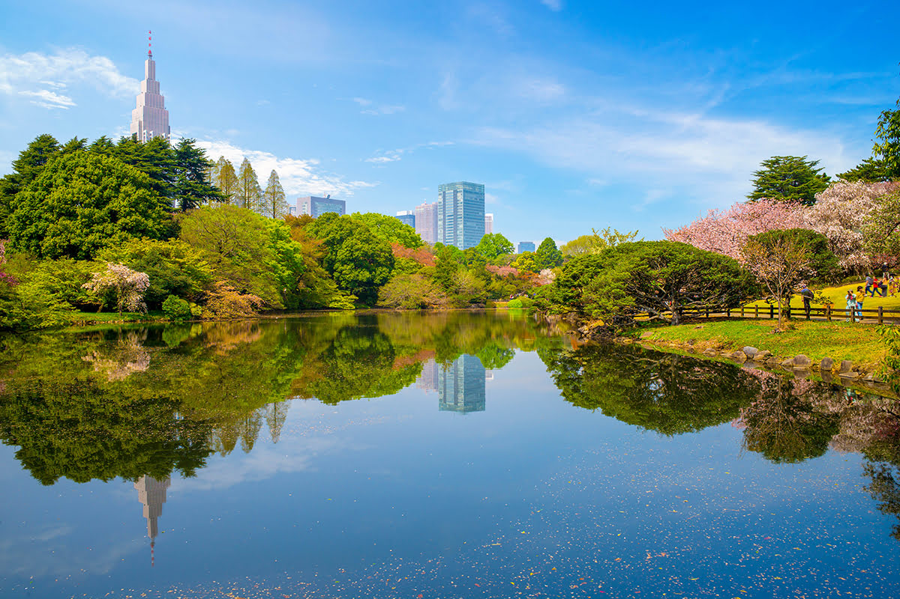
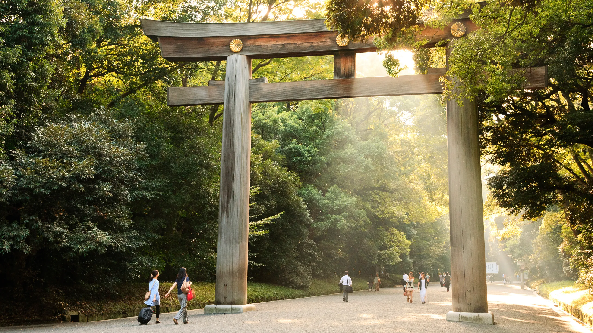

Parks and Gardens

Ueno Park
A historic park offering lush greenery, museums, and a tranquil escape from the city.

Shinjuku Gyoen
A stunning blend of Japanese, English, and French garden landscapes.

Yoyogi Park
A popular spot for picnics, jogging, and cultural events.